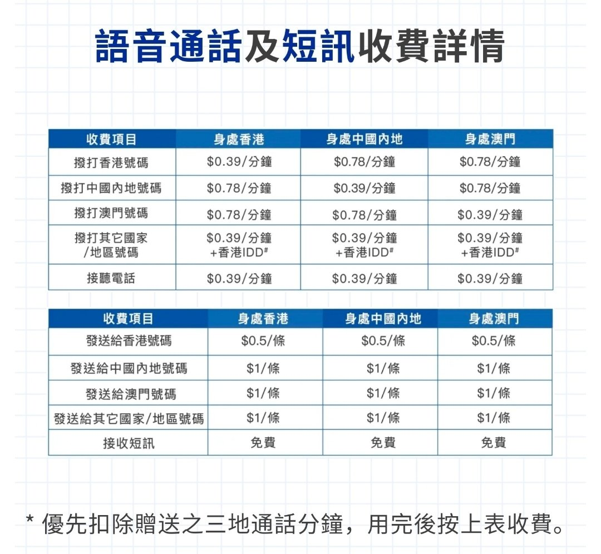

RedFox（2代目）🇲🇴🇭🇰
@FoxRed695449
說句實話我個人認為giffgaff性價比真的低
個人在內地的解決方案是中國電信（香港）的sim卡打電話加3sim hk的sim卡用流量
當然香港的sim卡也有缺點，要用港澳通行證/護照實名
但是電信的sim價格是真便宜啊，比起giffgaff的天價電話費不知道要便宜多少
而3sim hk 45gb流量只要268hkd

🍀🍥竹蜻蜓🍥🍀
@zqtlovekris99
giffgaff到底有什么用啊，为什么都想买这个，就是国外实体卡方便注册国外平台账号吗？而且如果要保持持续激活状态不是还得一直充话费吗，那为什么不用一次性的接码平台。我真的不懂，求教